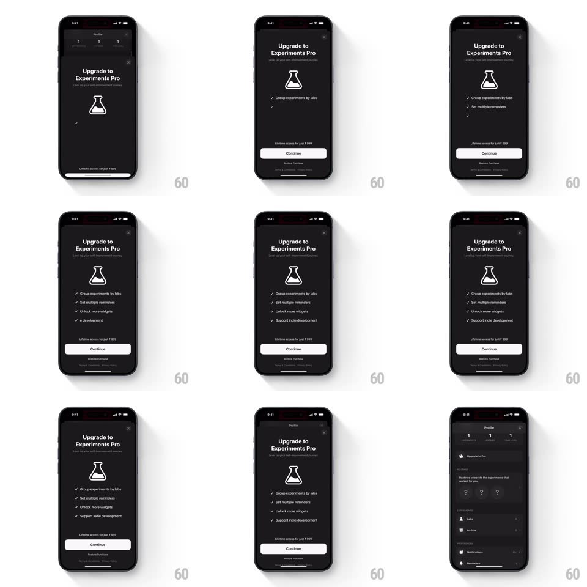

Media
Frame-by-frame

Rebuild this animation 1:1: Easlo's upgrade sheet - the "Upgrade to Experiments Pro" sheet slides up and its feature list fades in row by row, each checkmark row sliding up into place.

Rebuild this animation 1:1: Easlo's upgrade sheet - the "Upgrade to Experiments Pro" sheet slides up and its feature list fades in row by row, each checkmark row sliding up into place.
## Integration
Integration: stack-agnostic spec - springs given as stiffness/damping, timed motions as duration + curve; map every value to your framework and animation library of choice.
## Scene
Dark profile screen behind. The sheet: "Upgrade to Experiments Pro" with subline, a flask icon, four checkmark rows ("Group experiments by labs", "Set multiple reminders", "Unlock more widgets", "Support indie development"), "Lifetime access for just Rs 999", a Continue pill, and Restore Purchase.
## Motion spec
Pattern: staggered sheet content reveal, ~900ms.
- Sheet: slides up (spring ~320/26, 400ms) over a dimming backdrop (40%, 250ms).
- Header: title, subline, and flask fade up 14px (300ms) as the sheet lands.
- Rows: each checkmark row fades and slides up 10px with a 90ms stagger (300ms each); each check draws (150ms) as its row lands.
- Footer: the price line, Continue, and Restore Purchase fade in together (250ms) after the last row.
- Dismiss: the sheet slides down and the rows fade in reverse order (fast, 150ms total).
## Calibration
- The stagger is readable - each row fully lands before the next starts rising.
- Everything is monochrome; the checks are the only glyphs.
## Reduced motion
All content fades in at once (300ms).
## Don't miss
- Rows rise, they do not slide sideways.
- The Continue button is disabled-grey until the row stagger completes.